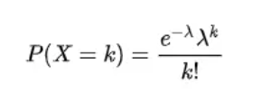

泊松分布
下面是一个实时显示泊松分布图像的例子。可以通过滑块调整 λ 的值，查看图像的变化。
起源
泊松分布（法语：loi de Poisson，英语：Poisson distribution）又称Poisson分布、帕松分布、布瓦松分布、布阿松分布、普阿松分布、波以松分布、卜氏分布、帕松小数法则（Poisson law of small numbers），是一种统计与概率学里常见到的离散概率分布，由法国数学家西莫恩·德尼·泊松在1838年时发表。
介绍
泊松分布是用于描述在一段固定时间内，某个事件发生的次数的概率分布模型。泊松分布的参数λ表示单位时间内该事件的平均发生次数。
如某一服务设施在一定时间内受到的服务请求的次数，电话交换机接到呼叫的次数、汽车站台的候客人数、机器出现的故障数、自然灾害发生的次数、DNA序列的变异数、放射性原子核的衰变数、激光的光子数分布等等。
具体来说，设X表示在时间t内该事件发生的次数，那么泊松分布的概率质量函数为： 其中，e是自然对数的底数，k表示实际发生的次数。
泊松分布的期望值和方差都等于λ。